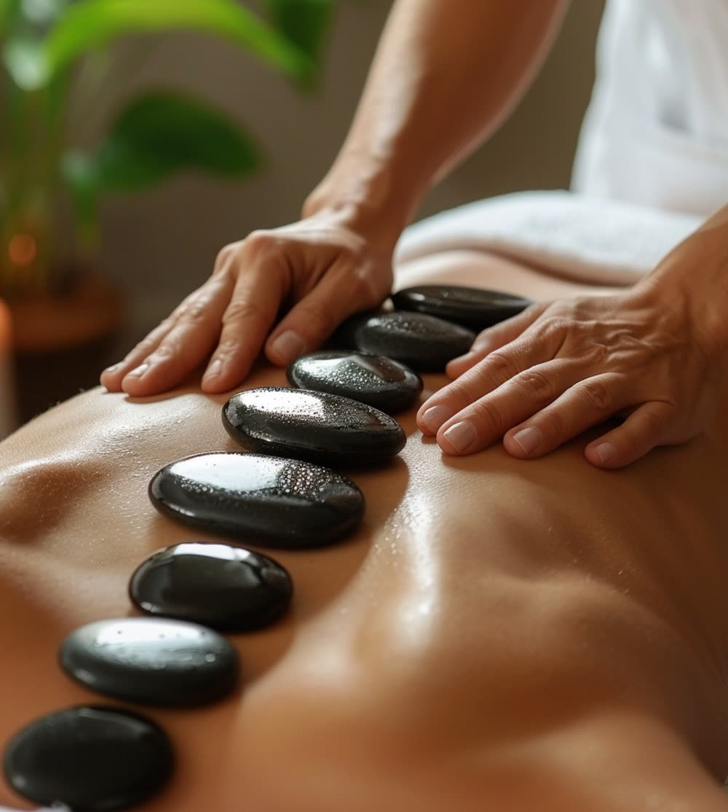

Masaże ciała · Poznań
Rozgrzany bazalt prowadzony po ciele i układany wzdłuż kręgosłupa. Ciepło robi część pracy za dłonie: mięsień ustępuje szybciej i przy mniejszym nacisku, więc głębokie rozluźnienie przychodzi łagodniej.

Na czym polega
Bazalt to skała wulkaniczna - długo trzyma ciepło i oddaje je równomiernie, dlatego używa się właśnie jego. Kamienie podgrzewamy w wodzie do temperatury odczuwanej jako przyjemnie gorąca i sprawdzamy ją, zanim dotkną Twoich pleców. Większe układamy wzdłuż kręgosłupa, mniejszymi terapeutka pracuje trzymając je w dłoni, jak przedłużeniem ręki.
Efekt bierze się z prostej rzeczy: rozgrzana tkanka ustępuje szybciej. To, co przy zwykłym masażu wymagałoby wyraźnego nacisku, tutaj rozluźnia się niemal samo. Dlatego ten zabieg wybierają często osoby, które chcą dojść głębiej, ale nie znoszą mocnego ucisku - a zimą także te, którym po prostu trudno się rozgrzać.

Korzyści
Ciepło pozwala dojść głębiej przy nacisku, który pozostaje delikatny.
Dla zimnych dłoni i stóp oraz dla wszystkich, którym zima daje się we znaki.
Gdy ciało jest spięte nie od wysiłku, lecz od tygodni w nerwowym trybie.
Rozgrzanie wzdłuż kręgosłupa ułatwia pracę nad partiami, które nie chcą puścić.
Jak przebiega zabieg
Pytamy o ciśnienie, żylaki, cukrzycę i ciążę - ciepło nie jest obojętne dla krążenia.
Sprawdzamy temperaturę kamienia na Twoich plecach, zanim zaczniemy pracę.
Kamienie ułożone wzdłuż kręgosłupa, mniejsze prowadzone w dłoni po ciele.
Kilka minut w cieple i szklanka wody - po tym zabiegu pije się jej więcej.
Czas trwania i cena
Godzina obejmuje plecy, kark i nogi. Osiemdziesiąt minut daje czas na całe ciało i na to, żeby nigdzie się nie spieszyć - a przy tym zabiegu pośpiech psuje najwięcej.
Przeciwwskazania
Ta lista jest dłuższa niż przy masażu klasycznym i nie bez powodu - ciepło jest dodatkowym bodźcem dla układu krążenia, a przy zaburzonym czuciu (na przykład w cukrzycy z neuropatią) trudniej ocenić, czy temperatura jest bezpieczna. Jeśli którykolwiek punkt Cię dotyczy, zapytaj lekarza albo wybierz masaż relaksacyjny, który daje podobne wyciszenie bez ciepła.
FAQ
Nie. Kamienie podgrzewamy w wodzie do temperatury odczuwanej jako przyjemnie gorąca, nie piekąca, i zawsze sprawdzamy ją na sobie oraz na Twoich plecach, zanim zaczniemy pracę. Jeśli w którymkolwiek momencie ciepło jest za mocne, wystarczy powiedzieć - kamień odkładamy albo czekamy, aż lekko przestygnie.
Ciepło robi część pracy za dłonie. Rozgrzany mięsień ustępuje szybciej i przy mniejszym nacisku, więc ten sam efekt rozluźnienia osiąga się łagodniej. Dla wielu osób jest to najprzyjemniejszy sposób na głębsze odprężenie bez mocnego ucisku.
Z bazaltu - skały wulkanicznej, która długo trzyma ciepło i oddaje je równomiernie. Kamienie mają różne rozmiary: większe układamy wzdłuż kręgosłupa, mniejszymi terapeutka pracuje w dłoni jak przedłużeniem ręki.
Ciepło jest tu dodatkowym bodźcem dla układu krążenia, więc lista przeciwwskazań jest dłuższa niż przy masażu klasycznym. Odradzamy go przy niekontrolowanym nadciśnieniu, chorobach serca, żylakach i zakrzepicy, cukrzycy z neuropatią, w ciąży oraz przy stanach zapalnych skóry. W razie wątpliwości zapytaj lekarza.
Tak. W gabinecie stoją dwa stoły, więc masaż kamieniami można zarezerwować dla dwóch osób jednocześnie - od 340 zł za 60 minut dla obojga.
Rezerwacja online
Wybierz dogodny termin online - potwierdzenie otrzymasz od razu.
Używamy niezbędnych plików cookies, żeby strona działała. Za Twoją zgodą chcemy też korzystać z Google Analytics, żeby wiedzieć, które podstrony są przydatne. Wybór możesz zmienić w każdej chwili. Szczegóły w polityce prywatności.
Potrzebne do działania strony i zapamiętania Twojego wyboru. Nie można ich wyłączyć.
Google Analytics - zagregowane statystyki odwiedzin. Domyślnie wyłączone.